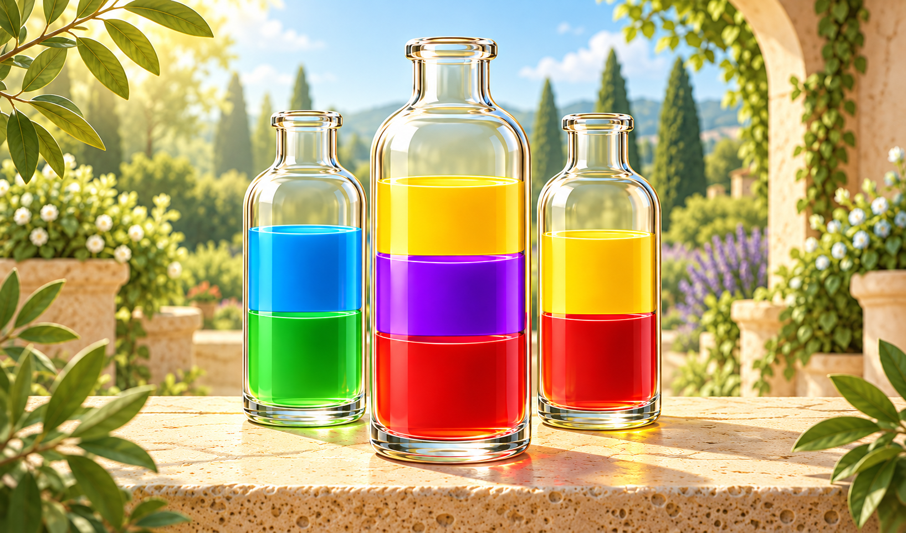

Potion Unmix
Переливайте цветные зелья и соберите каждый цвет в своей бутылке.

Об игре
Potion Unmix — головоломка с цветными зельями. В бутылках смешаны слои разных цветов, и ваша задача — рассортировать их так, чтобы каждая заполненная бутылка содержала только один цвет. Переливайте верхние слои, используйте пустые бутылки как временное место и продумывайте последовательность ходов. Один удачный перелив может открыть путь к следующему, а поспешный — занять нужное пространство. Решайте задачи на внимание и логику в спокойной атмосфере.
Как играть
- Нажмите на бутылку, из которой хотите перелить жидкость, затем на бутылку-получатель.
- Верхнюю группу одного цвета можно перелить в пустую бутылку или поверх такого же цвета, если хватает свободного места.
- Жидкость другого цвета сверху не допускается.
- Полная одноцветная бутылка уже собрана.
- Продолжайте, пока все непустые бутылки не будут заполнены одним цветом.
- Если допустимых ходов не осталось, пересмотрите порядок переливаний и начните уровень заново.